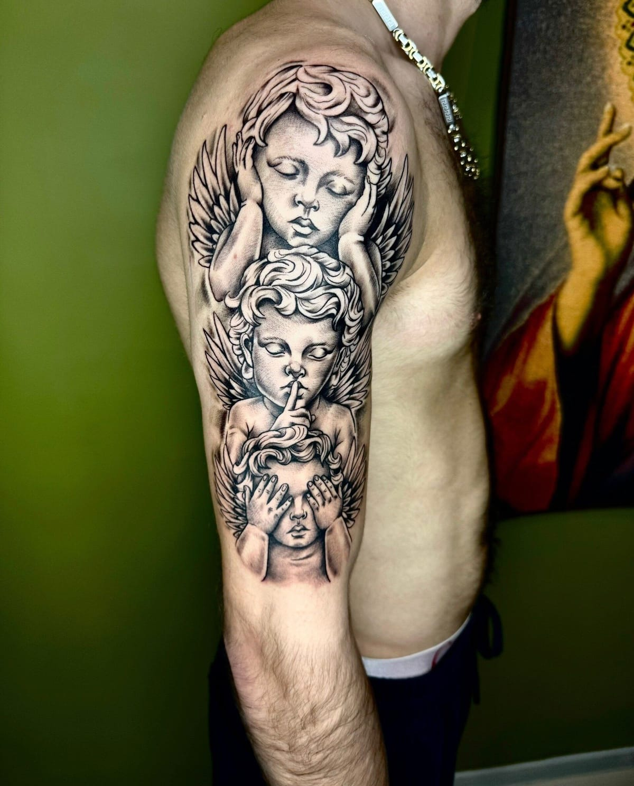

Кадр 01A · Краснодар · цокольный этаж
TattooVintage
Чёрно-серый реализм, рукава и спины — от эскиза до последней линии. Два мастера, одна комната, работаем до 02:00
с тобой навсегда останется только краска под кожей
Кадр 02A · фиксаж
В фотографии снимок закрепляет фиксаж — после него изображение уже не исчезает. У нас эту работу делает игла.
Рукав за один сеанс · перекрываем старые работы · эскиз рисуем вместе
Кадр 03A · два кадра на одной плёнке
Двое при красном свете
Мы начинали в Астрахани — там до сих пор ждут наших приездов. Теперь у нас свой угол в Краснодаре: одна комната, два мастера и только те работы, за которые не стыдно.
Кадр 04A · отбор
Контактный лист
Наведите лупу — линии выдерживают увеличение
Кадр 06A · пересъёмка
Неудачный кадр — не приговор
Смотрим, что уже есть на коже, и придумываем, как перекрыть или исправить старую работу.
Прислать фото старой тату ↗Кадр 07A · таймер
Как проявляется татуировка
Кадр 08A · первый раз
Первая тату? Почти все сначала боялись
Хорошее место 2026 · Яндекс Карты
Кадр 09A · ещё в студии
Ещё в студии
Цены на пирсинг уточняйте в сообщениях
Подарить сеанс
Подарочный сертификат — на день рождения, годовщину или просто так.
Узнать про сертификат ↗Кадр 10A · ночная смена
Принимаем по записи до 02:00. Иногда сеанс длится до раннего утра — поэтому в 8 утра мы ещё спим.
- ул. Петра Метальникова, 28
- вход 2
- цокольный этаж
- помещение 6/8
Ост. «ЖК Времена Года» · парковка · велопарковка · Wi-Fi · наличные и перевод